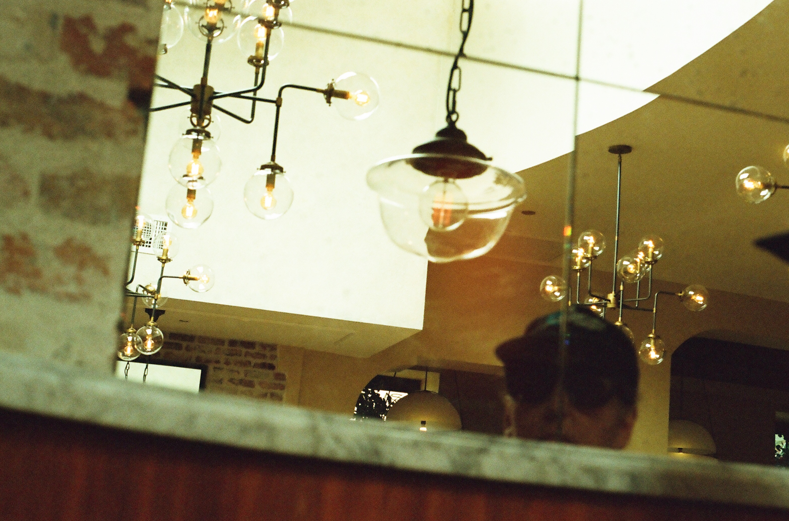

How does life look when it's still? Does it look sad, or weird, or anxious, or euphoric? What emotions can we find within the stillness? Can we find each other? Can we find ourselves? If we look for the one that's looking, we'll find that consciousness is all there is. Photography provides a way to interpret this stillness and make art out of it. This site will serve as a sanctuary for stillness. New photos will be posted here in time and if you feel inclined to fund this project you may do so below.
Examples of my work.
A couple walking in the Huntington Beach wetlands.
A pig race at the Orange County fair.

Mysterious woman reflected in a mirror at a diner.
A man with a yellow jacket at the Seal Beach pier.
"Everywhere is something which could be beautiful. You must only to see and to know what and how to take off, to crop from the infinity..."
-Florin Constantinescu
Help time stand still!
Donate what you can afford. Click that button over there!